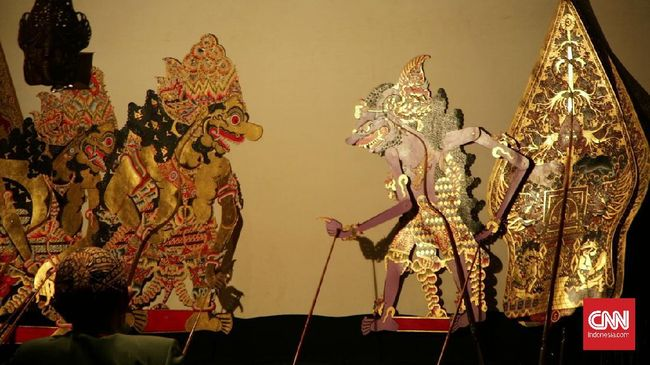

Sejarah
Indramayu timur (Sukagumiwang, Tukdana, Bangodua, Widasari, Arahan, Santigi (Cènthigi), Sindang, Balongan, Kedokanbuder, Juntinyuat, Krangkeng, Celeng (Lohbener), Kandanghaur (sebagian wilayah), Losarang, Patrol, Sukra (Sakra), Anjatan, Bongas, Haurgeulis, Bantawaru dan Plasa Kerep.
Wilayah indramayu tersebut masuk ke wilayah kerajaan galuh purwa (jawa kuno) yang letak pemerintahannya di kaki Gunung Slamet abad 1 Masehi.
Geografi
Secara geografis, Kabupaten Indramayu berada pada 107"51'-108"36' Bujur Timur dan 6"15'–6"40' Lintang Selatan. Wilayahnya terletak di bagian utara provinsi Jawa Barat yang berbatasan langsung dengan Laut Jawa. Kabupaten Indramayu berjarak sekitar 52 Km barat laut Kota Cirebon, 144 Km dari Kota Bandung melalui Sumedang serta 205 Km dari Jakarta ke arah timur. Seluruh wilayahnya merupakan dataran rendah hingga pesisir. Ada sebagian daerah yang memiliki perbukitan terutama di perbatasan Kabupaten Sumedang yaitu Dusun Ciwado Desa Cikawung, Kecamatan Terisi, Indramayu. Dan sebagian wilayah Sanca, Kecamatan Gantar
Iklim
Wilayah kabupaten Indramayu beriklim tropis basah dan kering (Aw) dengan dua pola musim, yaitu musim penghujan dan musim kemarau. Musim penghujan biasanya berlangsung sejak bulan Desember hingga bulan Maret. Musim kemarau berlangsung pada bulan Mei hingga bulan Oktober. Rata-rata curah hujan di wilayah kabupaten Indramayu adalah 1300–1800 mm per tahun dengan jumlah hari hujan berkisar antara 90–140 hari hujan per tahun. Oleh karena wilayahnya yang berada di pesisir pantai, suhu rata-rata tahunan wilayah ini cukup tinggi yaitu berkisar antara 23°–32 °C. Tingkat kelembapan di sebagian besar wilayah kabupaten Indramayu berkisar antara 70–85% per tahunnya.
Ekonomi
Pusat perekonomian kabupaten ini berada di wilayah Kecamatan Jatibarang dan Kecamatan Haurgeulis karena kedua kecamatan ini memiliki akses transportasi yang mudah seperti Jalur Pantura dan Stasiun Kereta Api. Beberapa kecamatan penting di wilayah Kabupaten Indramayu diantaranya adalah Kecamatan Patrol, Kecamatan Karangampel, dan Kecamatan Terisi.
Transportasi
Transportasi
Kabupaten Indramayu dilalui jalur utama pantura. Jalur pantura Indramayu mulai dari ruas Patrol-Lohbener-Jatibarang-Kertasemaya. Juga jalur alternatif sebelah utara Indramayu-Karangampel-Krangkeng yang menuju ke arah Cirebon. Sebagai jalur alternatif bisa melalui jalur Lohbener lalu ke kota Indramayu kemudian ke Karangampel diteruskan ke arah Cirebon. Kabupaten Indramayu juga dilalui oleh jalur kereta api. Stasiun kereta api terbesar berada di Jatibarang dan merupakan salah satu stasiun besar yang ada di Daerah Operasi 3 Cirebon.
Suku Bangsa
Kabupaten Indramayu menjadi salah satu wilayah di provinsi Jawa Barat, yang sebagian besar penduduknya adalah orang Jawa. Dua suku lain dengan jumlah signifikan yakni suku Cirebon dan Sunda. Sebagian kecil lainnya adalah orang Betawi, Tionghoa, Batak, Minangkabau, dan suku lainnya. Berdasarkan data Sensus Penduduk Indonesia tahun 2000, berikut adalah besaran penduduk kabupaten Indramayu berdasarkan suku bangsa.
Bahasa
Secara umum bahasa daerah yang digunakan masyarakat Kabupaten Indramayu, yakni Bahasa Jawa (Dialek Indramayu). Bahasa Jawa Indramayu (Dialek Indramayu) digunakan oleh mayoritas masyarakat Indramayu. Selain bahasa Jawa Indramayu (dialek Indramayu) di wilayah selatan dan barat daya menggunakan bahasa Sunda.
Bahasa Jawa di Kabupaten Indramayu sekarang ada tiga dialek. Mayoritas adalah dialek Dermayu (Indramayu). Tetapi ada pula bahasa Jawa dialek Cerbon (Cirebon), yakni di Desa Krangkeng, Kalianyar, dan sekirarnya di Kecamatan Krangkeng, yang berbatasan dengan Kabupaten Cirebon. Bahasa Jawa dialek Tegal-Brebes juga ada di wilayah barat Kabupaten Indramayu karena pada tahun 1920-an terdapat migrasi dari Tegal-Brebes ke wilayah tersebut, yakni di beberapa desa atau blok di Kecamatan Haurgeulis, Anjatan, Patrol, Sukra, dan Bongas.
Bahasa Jawa dermayu mayoritas digunakan masyarakat Indramayu, yakni kira-kira 1,5 juta penduduk. Ada dua tingkatan dalam bahasa Jawa dialek Dermayu yang merupakan dialek sosial (sosiolek).
Kebudayaan
1. Organ Tunggal Kesenian Indramayu salah satunya adalah kesenian Organ Tunggal, yakni pentas musik di atas panggung dengan menggunakan Organ. Organ Tunggal ini biasanya dipentaskan hampir di setiap acara, seperti acara tujuh belasan, juga pada hari raya keagamaan seperti Hari Raya Idul Fitri dan Idul Adha, meskipun lebih sering dipentaskan pada acara-acara hajatan, seperti hajatan pernikahan dan khitanan. Selain di atas panggung, kesenian musik organ ini juga dipentaskan secara berkeliling kampung pada saat-saat tertentu, seperti pada Bulan Ramadhan. Dua di antaranya yang cukup ternama beserta artisnya adalah: Organ tunggal Rolani Electone dengan Aas Rolani dan organ tunggal Puspa Kirana dengan Dewi Kirana. Tidak jarang grup-grup ini mendapat job manggung di luar Indramayu, bahkan lintas provinsi.
Tari Topeng
Seni tradisional lainnya adalah seni tari topeng, kesenian ini merupakan kesenian asli daerah Cirebon, termasuk Indramayu. Tari topeng adalah salah satu tarian di tatar Parahyangan. Disebut tari topeng, karena penarinya menggunakan topeng di saat menari. Tari topeng ini sendiri banyak sekali ragamnya, dan mengalami perkembangan dalam hal gerakan, maupun cerita yang ingin disampaikan. Terkadang tari topeng dimainkan oleh saru penari tarian solo, atau bisa juga dimainkan oleh beberapa orang.
Salah satu jenis lainnya dari tari topeng ini adalah tari topeng Kelana Kencana Wungu yang merupakan rangkaian tari topeng gaya Parahyangan yang menceritakan ratu Kencana Wungu yang dikejar-kejar oleh Prabu Menak Jingga yang tergila-tergila kepadanya. Pada dasarnya masing-masing topeng yang mewakili masing-masing karakter menggambarkan perwatakan manusia. Kencana Wungu, dengan topeng warna biru, mewakili karakter yang lincah namun anggun. Menak Jingga (disebut juga Kelana), dengan topeng warna merah mewakili karakter yang berangasan, temperamental dan tidak sabaran. Tari ini karya Nugraha Soeradiredja.
Wayang Kulit
Seperti masyarakat Jawa pada umumnya, kesenian Wayang masih kental melekat pada masyarakat Indramayu. Wayang Kulit Indramayu sebenarnya tak ada bedanya dengan wayang kulit Jawa, perbedaanya hanya terletak pada bahasa yang digunakannya, yaitu Bahasa Jawa Indramayu atau yang biasa dikenal dengan basa dermayon yang khas dalam tuturannya, baik lakon maupun sempal guyonnya.
Wayang kulit indramayu merupakan ragam khas wayang kulit cirebon, di mana sebenarnya wayang kulit cirebon masih serupa dengan wayang kulit purwa, tetapi memiliki ciri khasnya tersendiri jika ditinjau dari sudut seni kriya, wayang kulit cirebon dibuat cukup jauh berbeda dengan tatahan dan sungingan wayang kulit purwa, adapun bentuk wayang kulit cirebon ini agak mirip dengan wayang kulit bali tetapi ukurannya lebih langsing.

Mapag Dewi Sri
Pesta rakyat Mapag Dewi Sri ini, menurut kepercayaan masyarakat setempat merupakan kegiatan yang wajib diadakan setiap tahun. Konon pada tahun 1970-an kegiatan ini pernah tidak dilaksanakan karena hasil panen sedikit, karena tidak dilaksanakannya pesta rakyat Mapag Dewi Sri akibatnya banyak masyarakat setempat yang sakit. Semenjak kejadian itu, sekecil apapun hasi panen yang diperoleh, pesta rakyat Mapag Dewi Sri harus tetap dilaksanakan.
Sintren
Kebudayaan masyarakat Jawa yang melekat pada masyarakat Indramayu salah satunya adalah Sintren, Sintren adalan kesenian tradisional masyarakat Jawa, khususnya Pekalongan. Kesenian ini terkenal di pesisir utara Jawa Tengah dan Jawa Barat, antara lain Pemalang, Pekalongan, Brebes, Tegal, Banyumas, Kuningan, Cirebon, dan Indramayu. Sintren disebut juga dengan lais. Di Indramayu sendiri, kesenian Sintren dipentaskan pada acara-acara tertentu, misalkan hajatan atau syukuran, atau pentas seni tradisional. Dahulu ada pentas seni Sintren yang berkeliling kampung, tetapi sekarang sudah sangat sulit untuk ditemukan karena semakin tergeser oleh pentas dan hiburan modern.
Cindera Mata
Batik tulis Paoman
Batik yang berciri khas pesisir, memiliki corak yang berbeda dengan batik daerah lainnya. Perpaduan antara kepercayaan, adat istiadat, seni dan lingkungan kehidupan daerah pesisir, ditambah lagi adanya pengaruh dari luar, seperti Cina, Arab dan Timur Tengah, Hindu-Jawa serta Eropa ikut memengaruhi terbentuknya motif dan karakter batik tulis pesisir.
Industri kerajinan batik tulis ini terdapat di Kelurahan Paoman, Desa Pabean Udik, Kecamatan Indramayu dan Terusan, Sindang, Indramayu. Kualitas dari batik yang mem punyai ± 200 motif ini telah mampu menembus pasaran internasional, terutama para kolektor batik dari mancanegara.
Kerajinan Bordir
Kerajinan bordir berkembang cukup pesat di Indramayu, terletak di Desa Sukawera, Kecamatan Kertasemaya ± 6 kilometer dari Kota Jatibarang atau 22 kolimeter dari Kota Indramayu. Motif yang cukup terkenal adalah motif seruni, tapak kebo, bunga tulip, lunglungan, hasil produksinya mampu memenuhi permintaan pasar regional dan Nasional. Indramayu merupakan daerah yang sangat menarik untuk dikunjungi, karena letaknya yang sangat strategis yaitu di sepanjang jalan pantai utara Pulau Jawa.
Kuliner
Kuliner Indramayu tak jauh beda dengan kuliner Cirebon, di samping mempunyai kuliner khas Cirebonan yakni khas daerah Indramayu dan Cirebon, Indramayu juga punya beberapa kuliner khas Dermayonan yakni khas Indramayu.
1. Pedesan Entog
Kuliner ini khas Dermayonan, terbuat dari daging itik atau entog yang diracik dengan bumbu pedas yang khas;
2. Bubur Indramayu
Bubur ini asli Dermayonan, bubur ini memadukan bubur ayam dengan soto, maka dari itu bubur ini sering juga disebut dengan bubur soto;
3. Rumbah
Rumbah disebut juga dengan urab, pecel atau rujak, di Indramayu rumbah adalah sayuran yang sudah direbus, kemudian dilumuri dengan sambal asam, bisa ditambah dengan lontong, mi dan kerupuk melarat khas Cirebonan;
4. Nagasari
Kue khas Dermayonan ini terbuat dari tepung beras berisikan pisang yang dibungkus dengan daun pisang. Nagasari disebut juga dengan pipis.
Hasil Bumi
Hasil bumi Indramayu adalah padi, walaupun bukan penghasil padi terbesar, tetapi masyarakat Indramayu umumnya memiliki mata pencarian sebagai petani, dan sebagian besar wilayah Indramayu merupakan lahan pertanian, bahkan bisa ditemukan persawahan walaupun berada di pusat kota Indramayu.
Selain padi, hasil bumi yang paling terkenal adalah Mangga, jenis mangga khas Indramayu sendiri disebut Mangga Gedong gincu oleh masyarakat setempat. Mangga ini terkenal enak dan manis, tak ayal di sepanjang jalur utama Indramayu banyak pedagang buah mangga sebagai oleh-oleh khas Indramayu. Dari hasil bumi yang satu inilah, Indramayu mendapat julukan sebagai Kota Mangga. Memang tak afdal rasanya jika berkunjung ke Indramayu tanpa membeli atau mencicipi mangga Gedong gincu Indramayu.
Indramayu juga terkenal kaya akan sumberdaya migas, salah satu kilang minyak besar yang ada di Indramayu adalah Kilang Minyak Balongan yang berada di Kecamatan Balongan.